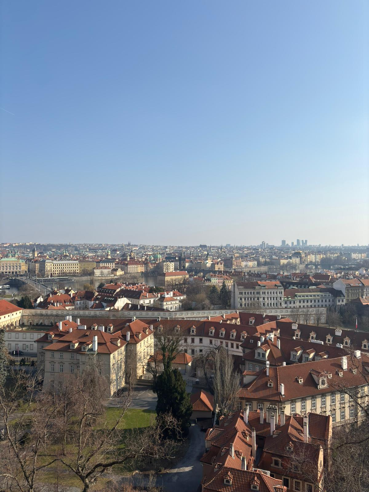
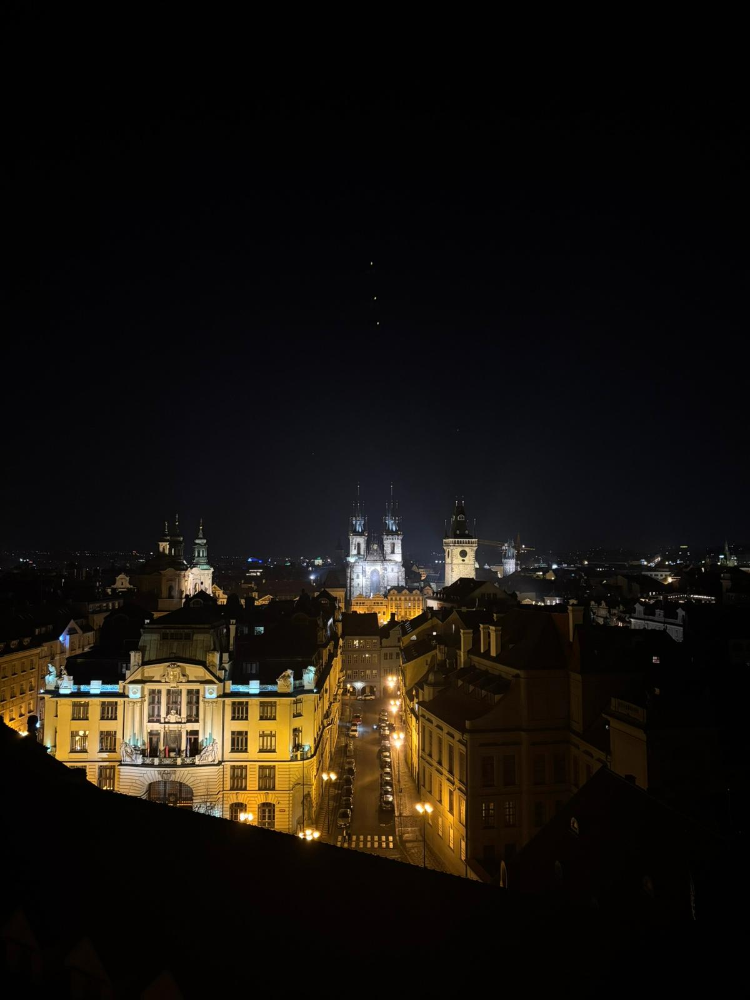
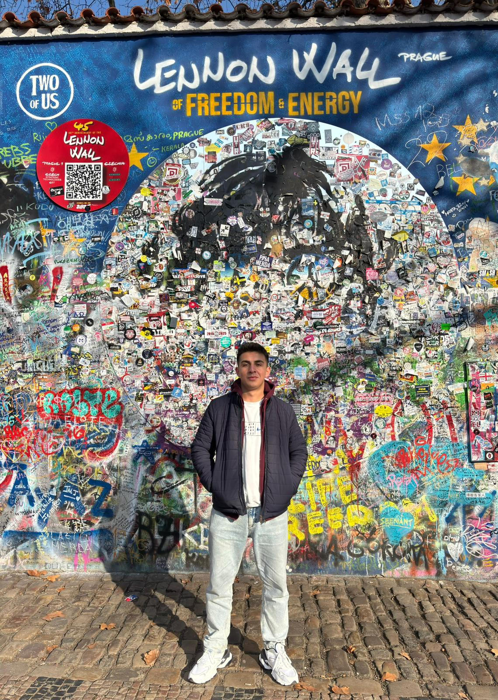

Czechia
Czechia was one of the countries I visited during my Erasmus journey, and Prague quickly became one of my favorite cities. The first thing that caught my attention was how magical the city looked. Its architecture was unlike anything I had seen before, and it felt as if the city had preserved its medieval atmosphere for centuries. One of my favorite experiences was visiting Prague Castle and enjoying the view over the city. Seeing Prague from above made me appreciate its beauty even more. Another unforgettable moment was watching the city at night from the Klementinum. The lights, the rooftops, and the historic buildings created a truly special view. Walking through Prague often felt like stepping into a fairy tale. Its unique architecture and historic atmosphere made it one of the most memorable destinations of my Erasmus journey.
Photo Gallery



Cities Visited
- Prague
Favorite Place
Klementinum
My Rating
9/10 ⭐